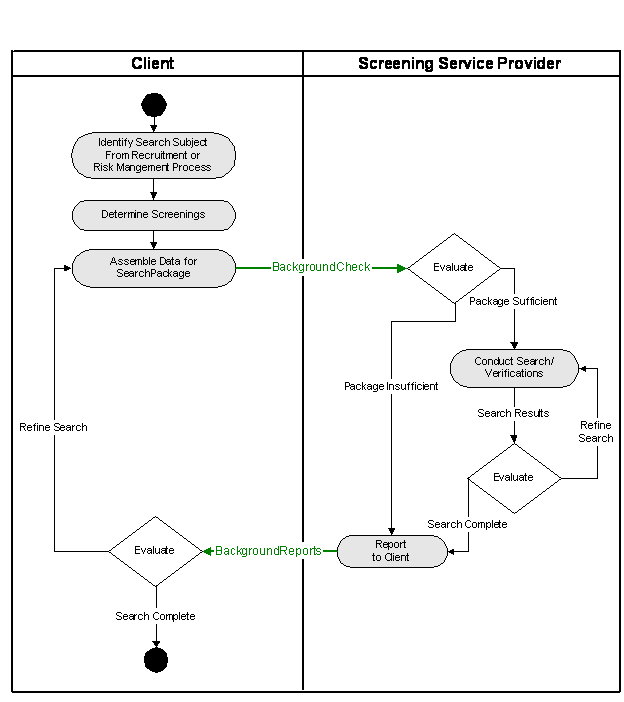

Background Checking
Recommendation, 2006 Feb 28
Editors: Craig Corner, HireCheck; Chuck Allen, HR-XML Consortium, Inc.
Contributors:
Sue Morgan, HireCheck; Mark Sulimirski, ChoicePoint; Paul Kiel, HR-XML Consortium, Inc.; Dan Gagne, HireRight; Brad Whitney, American Background; Owen Wilson, Total Information Services, Inc.; Ralph Jimenez and Gary Nargiz, EdVerify, Mark Jones; Kim Bartkus, HR-XML Consortium;
Copyright statement
©2006 HR-XML. All rights reserved. No part of this publication may be reproduced, stored in a retrieval system, or transmitted, in any form or by any means, electronic, mechanical, photocopying, recording, or otherwise, without the prior written permission of the publisher.
Abstract
The HR-XML Consortium’s Background Checking specification defines a data format for requests to employment-screening service providers. The specification also includes a format for the return of search results from those providers to clients. A wide variety of screenings are supported, including searches of criminal records, education, employment, military service, professional licenses, professional sanctions, and credit.
Employment-related screenings or “background checks” are common within the United States, but they are less common in other countries. Some employers routinely conduct screenings when applicants are first offered employment. Within certain industries or for certain types of positions, it also is common for employers to conduct periodic screenings of employees (for example, drug tests or periodic driving-record checks for employees who drive company vehicles).
This document provides an overview of the HR-XML Consortium Background Checking specification and directs implementers to documentation where specification components are detailed.
Status of this Document
The key words "MUST", "MUST NOT", "REQUIRED", "SHALL", "SHALL NOT", "SHOULD", "SHOULD NOT", "RECOMMENDED", "MAY", and "OPTIONAL" in this document are to be interpreted as described in RFC 2119.
Table of Contents
1.1.1 Components / Related Documentation
1.3.1 Items Within the Design Scope
1.3.2 Items Outside of Design Scope
1.3.3 Minimum Data Required to Execute Searches
1.4 Component Schemas and Dependencies
2.2.1 Types of BackgroundReports
BackgroundReportPackage/ErrorReport
BackgroundReportPackage/Screenings/ScreeningStatus
2.2.2 Treatment of Updates/Cancelations
3 Implementation Considerations
3.2 Laws Governing Background Checks
4 Appendix A – Document Version History
5 Appendix B – Related Documents
1 Overview
HR-XML’s Background Checking specification supports requests to providers of background-checking services as well as the return of results from those providers.
HR-XML’s Background Checking specification supports a wide variety of screenings, including searches of criminal records, education, employment, military service, professional licenses, administrative/professional sanctions, and credit. Some employers routinely conduct screenings (for example, criminal-record checks, drug testing, etc.) when applicants are first offered employment. Within certain industries or for certain types of positions, it also may be common for employers to conduct periodic screenings of employees (for example, periodic driving record checks for employees who drive company vehicles).
The following changes were made to the Background 2.1 specification. The schema, documentation and instances have been updated accordingly.
Background Check schema and Background Requests documentation
· Added optional element BackgroundSearchPackage\ProcessingInformation
· Added optional element BackgroundSearchPackage\SupportingDocumentation
Credit schema and Credit Report documentation
- CurrencyAmountType and CurrencyType were moved to the ScreeningTypes schema.
Background Reports schema and Background Reports documentation
· Added optional element BackgroundReportPackage\ProcessingInformation
· Added optional element BackgroundReportPackage\PackageCost
· Added optional element BackgroundReportPackage\Screenings\Screening\ScreeningCost
Screening schema
· Added optional element SearchDrugs
· Added optional AdmittedChargeSummary
ScreeningTypes schema
· Moved CurrencyAmountType and CurrencyType from Credit.xsd
· Added additional enumerations to CourtTypeQualifiers
· Added additional enumerations to ReasonForTestTypes
· Added additional enumerations to SearchQualifiersCriminal
· Added additional enumerations to SearchTypeTypes
· Added additional enumerations to SpecimenTypes
· Added additional enumerations to VendorTypes
· Added ScreeningCostType
· Added optional Attribute to ScreeningPostalAddressType
· Added SearchQualifiersSanctions to SearchQualifierType
1.1 Objective
The HR-XML’s Consortium’s Background Checking specification includes schemas that support:
§ Requests to third-party providers of employment screening services; and
§ The return of screening results or notifications of other outcomes (see Section 0, BackgroundReportPackage/ErrorReport).
1.1.1 Components / Related Documentation
The HR-XML Consortium’s Background Checking specification consists of a number of different components. This document provides a broad overview of the entire specification. Details for major components are contained in the documents listed below:
Background Requests
http://ns.hr-xml.org/2_5/HR-XML-2_5/Screening/US/BackgroundRequests.html
Background Reports
http://ns.hr-xml.org/2_5/HR-XML-2_5/Screening/US/BackgroundReports.html
Credit Reports (a component of the
BackgroundReports schema)
http://ns.hr-xml.org/2_5/HR-XML-2_5/Screening/US/CreditReport.html
The HR-XML Consortium’s Background Checking specification also makes extensive use of the Consortium’s approved “Cross Process Objects” (CPO’s). A list of documentation for the Consortium’s complete set of CPO’s can be found in Appendix B. However, the following CPO documentation will be of particular importance to implementers of the Background Checking specification:
Employment History
http://ns.hr-xml.org/2_5/HR-XML-2_5/CPO/EmploymentHistory.html
EducationHistory
http://ns.hr-xml.org/2_5/HR-XML-2_5/CPO/EducationHistory.html
MilitaryHistory
http://ns.hr-xml.org/2_5/HR-XML-2_5/CPO/MilitaryHistory.html
For details on the dependencies among the Background Checking specification’s component schemas, see Section 1.1, Component Schemas and Dependencies.
1.1.2 Domain Issues
Background checking has become a formalized procedure compared to its beginnings when it was as simple as asking a friend or associate if they ever heard of a new applicant. The risk of costly litigation has resulted in more and more employers conducting background checks on their employees each year.
Currently customer systems (typically, core HR systems or applicant tracking systems) and the systems of background-checking providers are unable to universally exchange information. This often leaves clients with the burden of keying data to multiple systems or paying for the development of custom interfaces to enable business with a particular vendor. The requirement to develop custom interfaces makes it difficult and expensive for employers or HR service partners to integrate their systems with those of background checking firms.
1.1.3 Business Reasons
The HR-XML Consortium’s Background Checking specification defines the format for data exchange between HR systems (core HR systems, applicant-tracking systems, etc.) and the systems maintained by background checking firms. A standard format for data exchange enables the easy integration of different systems. Integrated systems reduce administrative costs by eliminating the need to re-key data and by eliminating errors that occur when data is re-keyed from requests submitted on paper or by fax. Integrated systems also eliminate “manual data integration” that occurs when administrators must key data into web-based forms or “cut and paste” data from one web application to another.
The Background Checking specification allows employers choosing a background-checking service to focus on factors such as quality of service, accuracy, and pricing instead of having to consider integration details and other “non-functional” factors. The speedy return of background check results helps ensure that employers do not lose qualified candidates to other employers as a result of screening delays.
For background checking service providers, HR-XML’s specification reduces time and costs involved in acquiring new accounts and allows for low-cost, opportunistic partnering with HR software vendors.
1.1.4 Terminology
Key terms used in this specification are defined below:
§ Background Check. A Background check consists of one or more screenings. Background checks typically are conducted on applicants after they have been given a conditional offer of employment, but they also may be conducted on current employees or other human resources (for instance, a contractor or vendor employee). For example, an employer might periodically request motor vehicle record searches for its truck drivers to ensure they have clean driving records and to ensure they have maintained the licenses required for their positions.
§ Screening. A screening is a particular type of search or verification procedure conducted as part of a background check. Examples of screenings include checks of criminal records, department of motor vehicle records, education, employment, and professional licenses.
1.2 Design Requirements
The principal design requirement for Background Checking 2.0 was to develop complete, but flexible schemas to support requests to providers of employment-screening services as well as the return of search results.
The HR-XML Consortium’s Background Checking 2.0 improves upon the previous specification released by the Consortium. The BackgroundReports 2.0 schema is designed to return results of a background check either as discretely fielded data or as an un-fielded (“un-parsed”) block of text. In comparison, the previous version of the specification included a very simple schema that accommodated only the return of an un-fielded block of text for each type of screening report.
1.3 Scope
Items within and outside of the design scope are detailed below.
1.3.1 Items Within the Design Scope
Version 2.0 of the HR-XML Background Checking specification is intended to support a wide variety of possible employment-related screenings. Within the BackgroundCheck Request schema, screenings are specified using the type attribute on the Screening component, which includes built-in enumerations for common types of screenings. Clients also may specify additional types of screenings that they have arranged with their background check providers. Among the screenings supported by the specification include:
§ Credit. The specification supports requests for credit checks and the return of credit scores and credit histories, such those produced by credit bureaus (Experian, Equifax, and Trans Union, for example). The specification includes a separate Credit Reporting schema capable of capturing all the employment-related fields from the major credit bureaus report formats.
§ Criminal records. The specification is capable of transmitting information required for criminal records searches as well as results.
§ Drug testing. Data relating to drug-test screening requests and reports can be transmitted. A medical laboratory with an affiliation or trading-partner relationship with the screening service provider typically might conduct the drug tests.
§ Education verification. The specification can support requests to verify educational information claimed on a resume or application. The specification also supports the return of education search findings. The BackgroundCheck Requests and BackgroundReport schemas make use of the HR-XML Consortium’s EducationHistory schema.
§ Employment verification. Information necessary to research or verify current and prior employment can be transmitted and results returned. The BackgroundCheck Requests and BackgroundReport schemas make use of the HR-XML Consortium’s EmploymentHistory schema.
§ Military service verification. Details on military service can be transmitted for verification and the search results returned. The BackgroundCheck Requests and BackgroundReport schemas make use of the HR-XML Consortium’s MilitaryHistory schema.
§ Motor vehicle records. The specification supports requests for motor vehicle record searches and the return of reports. Typically, motor vehicle records contain information such as driver’s license status, suspensions and revocations of driving privileges, infractions and violations, and restrictions on licenses.
§ Professional/administrative sanctions. Professional organizations (for example, bar associations for attorneys or medical boards for physicians) often set guidelines and codes of practice for their profession. Professional organizations may penalize or sanction professionals that violate guidelines and codes of practice. Government agencies also may impose sanctions on professionals that violate government contracting or program requirements. For example, in the United States, physicians and health care providers can face sanctions for abuses under the federal Medicare program. The BackgroundChecking specification provides a flexible mechanism for requesting professional and administrative sanction searches and the return of information regarding any sanctions.
§ Skills assessment. The specification is capable of transmitting information identifying skills or competencies claimed by a search subject that the client wants to verify or assess. The specification also is capable of supporting the return of the assessment results. The SearchOther component of the BackgroundCheck Request schema incorporates the HR-XML Consortium’s Compenency specification. This gives clients a flexible container to transmit information about a skill or competency. The SkillsAssessmentReport component within the BackgroundReports schema supports the return of assessment details. The BackgroundChecking specification does not address the process or means by which skills are verified or assessed. The specification merely provides a data format for assessment information to be transmitted.
§ Social security number verification. Within the United States, employers often want to verify a new employee’s social security number (SSN). SSN verification results can help ensure payroll tax processing is accurate and also can be useful in researching questions regarding an employee’s eligibility to work.
§ Professional license. The BackgroundCheck Request schema’s SearchLicence component is used to support professional license searches. Typically, clients would be interested in confirming the type, status, and duration of a license held by the search subject. Enumerations for a wide variety of license types are built-in to the schema. These built-in license types also can be extended with additional types that are applicable to a client’s particular business or industry. The specification also supports the return of professional-license search results.
§ Professional/personal reference reports. The specification allows the transmission of information necessary for a screening-service provider to conduct checks of a subject’s professional or personal references. As with other types of screenings, the specification allows the referencing of questions sets agreed-to by the client and the screening-service provider. The service provider can use those questions sets to structure interviews with the individuals the subject has provided as references. The specification also supports the return of professional/personal reference check results.
§ Workers compensation. The specification supports the transmission of information necessary to research a subject’s workers compensation claims history. The specification also supports the return of such claims history.
§ Customized screening and verification. The BackgroundCheck schema can flexibly support customized screenings and verifications that a client and background checking service providers may agree upon.
1.3.2 Items Outside of Design Scope
Among items outside of the scope of this specification are:
§ Order generation/trading partner agreements. The BackgroundCheck schema is intended to enable the transfer of the data necessary to execute a background search. In addition, the schema is sufficiently comprehensive to support a complete “search order” in some, but not all cases. In many cases, a trading partner agreement would need to be established prior to executing a search so that necessary powers of attorney and other authorizations could be completed and so that “question sets” (specific questions or items the client wants answered or investigated, see below) could be developed and approved.
§ Dynamic question set generation/submission. The BackgroundCheck schema allows clients submitting background checks to reference questions sets that were previously submitted to the screening-service provider. For example, a client might provide a set of questions that the screening firm should ask employment references. Note that the schema does not support the submission of those questions. This is appropriate since questions generally would be reviewed for legal compliance before they would be used within the screening process.
§ Interactions with the search subject. HR-XML’s Background Checking specification does not address interactions with the subject of a background search. There are a variety of interactions with the search subject that are necessary in the course of a background check. For instance, a client might not be willing or able to provide certain information required for a particular search (for example, date of birth). In such cases, the screening-service provider might contact the search subject directly. Other contact with the search subject might be necessary under applicable law. For instance, the client or screening-service provider might be responsible for notifying search subjects of adverse decisions based on information obtained from a credit report or other search.
§ Interfaces with original sources of background check information. The specification is designed to support interactions between third-party screening-service providers and their clients. The specification is not intended to cover interfaces with original sources of screening information, such as courts, governments, educational institutions, etc. However, some of the components of the HR-XML Consortium’s Background Checking specification could be useful to developers of original-source interfaces.
§ Implementation frameworks. This specification, like all HR-XML Consortium specifications, is intended to be independent of specific transport or messaging frameworks and thus does not address those details.
1.3.3 Minimum Data Required to Execute Searches
The minimum data required to successfully execute many of types of screenings will vary from jurisdiction to jurisdiction. In general, the specification makes no attempt to enforce these jurisdictional requirements within the schema. The separate document “BackgroundCheck Requests,” includes an appendix with some general guidance on the minimal data required for specific types of screenings.
1.3.4 International Support
Employment-related background checks are common within the United States, but they are less common in other countries. In some jurisdictions, prevailing law may prohibit the transmittal of some information necessary to execute a background check (see Sections 3.1, Data Privacy and 3.2, Laws Governing Background Checks). The HR-XML Consortium’s Background Checking specification is designed to support U.S. background checking practices and supports international checks where possible.
1.4 Component Schemas and Dependencies
The HR-XML Consortium’s Background Checking Specification consists of two principal schemas, BackgroundCheck Requests and BackgroundReports. It also includes a number of component schemas. The dependencies among these schemas is presented in the table below:
|
Schema |
Description |
Components |
|
BackgroundCheck.xsd |
The primary schema used to structure background check requests to screening-service providers. |
xml.xsd (W3C) Screenings.xsd |
|
BackgroundReports.xsd |
The primary schema used to structure the return to clients of screening results, status, or errors. |
xml.xsd (W3C)
Credit.xsd |
|
Credit.xsd |
This is intended as a component schema within BackgroundReports.xsd to structure credit reports. Credit.xsd also could be useful as a stand-alone schema, although the primary supported business process (see Section 2.2, Business Process Overview) does not contemplate such use. |
ScreeningTypes.xsd |
|
Screenings.xsd |
A component schema that contains element and type definitions necessary for specific screenings, such as criminal record search requests, credit, education history, etc. |
xml.xsd (W3C)
ScreeningTypes.xsd
|
|
ScreeningTypes.xsd |
A component schema containing lower-level simple and complex types shared across the various component schemas. |
xml.xsd (W3C) xmldsig-core-schema.xsd (W3C) DemographicDetail.xsd EducationHistory.xsd PositionHeader.xsd EmploymentHistory.xsd MilitaryHistory.xsd |
Some of the component schemas listed in the third column were not defined as part of the Background Checking specification, but were defined by the HR-XML Consortium’s Cross Process Objects (CPO) and other workgroups. For further information, see Appendix B. Also note that xmldsig-core-schema.xsd defines structures necessary for digital signatures and xml.xsd sets out datatypes for representing languages, as well as other schema types. These schemas are bundled within the HR-XML release package. However, they were developed and is owned by the World Wide Web Consortium (W3C). For further information, see http://www.w3c.org/
2 Business Process Supported
As depicted in the diagram below, the HR-XML Background Checking specification is intended to support BackgroundCheck Requests from a client to a background-checking service provider. This might be a single request or multiple requests sent in batch.
The BackgroundCheck Requests and BackgroundReports schemas may be used to structure exchanges within a wide range of scenarios. The scenario depicted below is very generalized and illustrative of typical usage.
2.1 Actors
The actors in transactions supported by this specification are:
§ A Client. The client usually would be an employer or an agent of an employer, such as a recruiter or recruiting solutions provider.
§ A Screening-Service Provider. A screening service provider generally is a company that provides a range of pre-employment background checking services to employers. “Background-checking service provider” and “screening-service provider” are used interchangeably. Sub-contracting among screening service providers is common. Thus, in some cases a screening service provider could stand in the role of a client – that is a screening service provider might originate a BackgroundCheck Request to another provider.
The search subject (the person who is the subject of the background check) obviously is another actor involved in the background check process. Certain notifications to the search subject may be required by applicable law (see Section 3.2, Laws Governing Background Checks). However, as noted in Section 1.3.2, interactions with the search subject are outside the scope of this specification.
2.2 Business Process Overview

2.2.1 Types of BackgroundReports
For each BackgroundCheck Request, one or more BackgroundReports are returned. BackgroundReports may contain:
§ Results for the particular screenings that were requested;
§ Details regarding insufficiencies or errors in the BackgroundCheck request that prevented the successful execution of the request; or
§ Information regarding the status of a BackgroundCheck request that is pending.
Error and status reports are explained an illustrated in the sections that follow.
BackgroundReportPackage/ErrorReport
The ErrorReport section of the BackgroundReports schema allows a screening service provider to report insufficient (or otherwise ambiguous or incorrect) information that prevents a BackgroundCheck Request from being executed successfully.
ErrorSeverity may be specified within ErrorReport so that fatal errors (errors that prevent the return of any results) can be distinguished from those that might return partial or unreliable results.
ErrorCode is provided to allow trading partners to specify codes identifying particular types of error conditions. Standardizing BackgroundCheck error codes is outside the scope of this specification.
Example: BackgroundReportPackage/ErrorReport
<?xml version="1.0" encoding="UTF-8"?>
<BackgroundReports xmlns="http://ns.hr-xml.org" xmlns:xsi="http://www.w3.org/2001/XMLSchema-instance" xsi:schemaLocation="http://ns.hr-xml.org
BackgroundReports.xsd" userId="900XXX">
<ProviderReferenceId>
<IdValue>205</IdValue>
</ProviderReferenceId>
<BackgroundReportPackage type="errors">
<ProviderReferenceId>
<IdValue>A1111</IdValue>
</ProviderReferenceId>
<ErrorReport>
<ErrorDescription>Missing Required Field: DATEOFBIRTH</ErrorDescription>
<ErrorCode>300</ErrorCode>
<ErrorSeverity>Fatal</ErrorSeverity>
<FileReferenceId>
<IdValue>11202001173000</IdValue>
</FileReferenceId>
<PackageReferenceId>
<IdValue>112020011</IdValue>
</PackageReferenceId>
<ScreeningReferenceId>
<IdValue>570128-338586</IdValue>
</ScreeningReferenceId>
<ScreeningType>education</ScreeningType>
<ProviderReferenceId>
<IdValue>XXXO1034.XML</IdValue>
</ProviderReferenceId>
</ErrorReport>
<ErrorReport>
<ErrorDescription>Missing Required Field: DATEOFBIRTH</ErrorDescription>
<ErrorCode>300</ErrorCode>
<ErrorSeverity>x:Serious but not fatal2</ErrorSeverity>
<FileReferenceId>
<IdValue>41202001173000</IdValue>
</FileReferenceId>
<PackageReferenceId>
<IdValue>412020011</IdValue>
</PackageReferenceId>
<ScreeningReferenceId>
<IdValue>570428-738586</IdValue>
</ScreeningReferenceId>
<ScreeningType>license</ScreeningType>
<ScreeningQualifier>mvPersonal</ScreeningQualifier>
<ProviderReferenceId>
<IdValue>XXXO1034.XML</IdValue>
</ProviderReferenceId>
</ErrorReport>
</BackgroundReportPackage>
</BackgroundReports>
BackgroundReportPackage/Screenings/ScreeningStatus
The BackgroundReports schema supports the ability to transmit information regarding the status of a BackgroundCheck request that is pending.
Example: BackgroundReportPackage/Screenings/ScreeningStatus
<?xml version="1.0" encoding="UTF-8"?>
<BackgroundReports xmlns="http://ns.hr-xml.org" xmlns:xsi="http://www.w3.org/2001/XMLSchema-instance" xmlns:sep="http://ns.hr-xml.org" xsi:schemaLocation="http://ns.hr-xml.org BackgroundReports.xsd" userId="900XXX">
<!-- Example of Search Status results -->
<ProviderReferenceId>
<IdValue>204</IdValue>
</ProviderReferenceId>
<BackgroundReportPackage type="status">
<ClientReferenceId>
<IdValue>A1234</IdValue>
</ClientReferenceId>
<Screenings>
<Screening type="education">
<ClientReferenceId>
<IdValue>A1234-1</IdValue>
</ClientReferenceId>
<ProviderReferenceId>
<IdValue>01234</IdValue>
</ProviderReferenceId>
<ScreeningStatus>
<OrderStatus>New</OrderStatus>
<DateOrderReceived>2002-01-13T12:24:01</DateOrderReceived>
</ScreeningStatus>
</Screening>
<Screening type="license" qualifier="mvPersonal">
<ClientReferenceId>
<IdValue>A1234-2</IdValue>
</ClientReferenceId>
<ProviderReferenceId>
<IdValue>01235</IdValue>
</ProviderReferenceId>
<ScreeningStatus>
<OrderStatus>InProgress</OrderStatus>
<DateOrderReceived>2002-01-13T12:24:01</DateOrderReceived>
</ScreeningStatus>
</Screening>
<Screening type="credit">
<ClientReferenceId>
<IdValue>A1234-3</IdValue>
</ClientReferenceId>
<ProviderReferenceId>
<IdValue>01236</IdValue>
</ProviderReferenceId>
<ScreeningStatus>
<OrderStatus>Cancelled</OrderStatus>
<DateOrderReceived>2002-01-13T12:24:01</DateOrderReceived>
</ScreeningStatus>
</Screening>
</Screenings>
</BackgroundReportPackage>
</BackgroundReports>
2.2.2 Treatment of Updates/Cancelations
While requests usually are processed in an asynchronous fashion, client-initiated updating or canceling of existing BackgroundCheck Requests are not explicitly supported by this specification. This is because under prevailing industry practice, legal and financial commitments usually are triggered at the time a customer makes the request. Consequently, the practice within the industry often is to treat a “corrective” or “updated” request as a new request. The HR-XML Consortium’s Screening workgroup will examine the support of additional possible actions in a future release.
3 Implementation Considerations
3.1 Data Privacy
Human resources data, by its very nature, is personal data. The laws of many jurisdictions as well as codes of fair information practice require organizations to handle personal data in a way that protects individuals from loss of privacy.
The data exchange specifications developed by the HR-XML Consortium are designed to be useful across many jurisdictions and within a variety of business contexts. It is not feasible for the HR-XML Consortium to develop specific privacy guidance for every jurisdiction or business context in which the Consortium's specifications might be implemented. When implementing data exchanges using the HR-XML Consortium's data definitions (or, for that matter, using any other type of data exchange mechanism), organizations are advised to examine the privacy protections that may be required under applicable law and codes of fair information practice.
For information on protecting personal data, general references include: European Union Data Protection Directive (95/46/EC); the Association Computing Machinery Code of Ethics (1992); Canadian Standards Association Model Code for the Protection of Personal Information (1995 – PIPEDA); and U.S.-EU Safe Harbor Principles and FAQs (2000).
3.2 Laws Governing Background Checks
Implementers of the Background Checking are advised to review applicable law in the jurisdictions in which they operate. For example, in United States, the Fair Credit Reporting Act may require third-party providers of background-check services to obtain the consent of search subjects and to advise them of results before adverse action is taken.
4 Appendix A – Document Version History
|
Date |
Description |
|
2002 Dec 11 |
Initial Draft |
|
2003 Jan 23 |
Revised with TSC/CPO comments; SAP comments |
|
2003 Feb 10 |
Incorporated edits from review. |
|
2003-Feb-26 |
Approved recommendation by HR-XML Consortium. The default and targetNamespaces of all HR-XML schemas have been standardized to "http://ns.hr-xml.org". This recommendation is available as part of the HR-XML 2_0 architecture. |
|
2003-Sept-01 |
EmploymentHistory 2_2 passed a vote and incorporated here. No other changes. |
|
2004-Jun-25 |
See overview for changes. |
|
2006-Feb-28 |
Approved by Consortium |